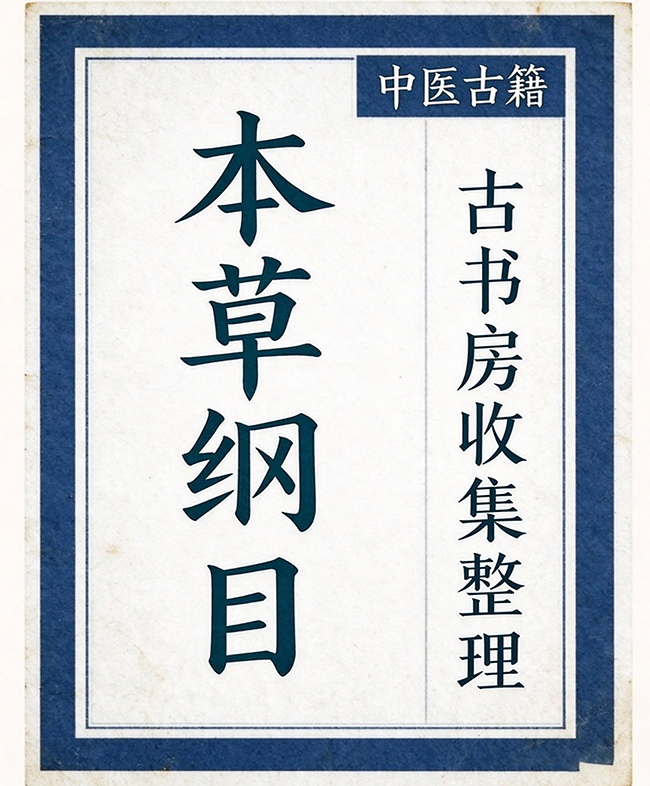

封面图 1本草纲目
五十二卷 · 古本整理转录
 封面图 2
封面图 2
医方集解
方剂分类备查
 封面图 3
封面图 3
饮食须知
日常食味宜忌
 封面图 4
封面图 4
饮膳正要
食疗膳养记录
古本手写转录 · 简体整理注释本
本页面全部内容仅为**古代中医药古籍文化阅览、学习研究用途，绝对不构成任何医疗诊断、用药指导，不能作为实际抓药、食疗、内服外用的参考依据**，请勿直接照搬书中记载自行用药。 ## 一、医学使用风险提示 1. 本书转录的是明代古籍原文，受时代局限，部分药材记载存在认知偏差；大量矿物药、虫类药、动物药具备毒性，存在中毒风险，部分方剂配伍、剂量已经不符合当代中医药临床规范。**一切中药使用，必须经过执业中医师、中药师辨证，凭医师处方使用**，严禁自行对照文本采药、配药、煎服、外敷。 2. 书中兽部、禽部、鳞部、介部收录部分动物药材，**其中部分物种属于国家重点保护野生动物**，依据《中华人民共和国野生动物保护法》，禁止猎捕、杀害、交易、食用保护野生动物及其制品；即便非保护动物来源药材，也必须凭医师处方、通过具备合法资质的正规渠道获取，严禁私自采集、买卖野生动物原料中国人大网。 3. 人部为古代古籍遗留篇目，记载人体相关入药内容，**现代伦理、医药法规大多已经禁用此类物质**，仅作历史文献存档展示，现实中不得采集、加工、使用。 ## 二、版权说明 1. 《本草纲目》原著属于古代公版古籍，原作者李时珍去世已远超著作权保护期限，原著文本不受现代著作权保护中国人大网。 2. **本网页 HTML 程序代码、网页排版格式、数字化整理后的文本，为本次数字化整理产出，受著作权法保护**；仅允许个人学习阅览，未经书面许可，禁止对本网页代码、整理文本进行二次修改、批量复制、转载、商业用途发布。 3. 引用本数字化内容，请注明来源：《本草纲目》古籍数字化阅览项目，原著：李时珍。 ## 三、法律责任声明 1. 用户如无视本提示，直接依据本网页古籍内容自行采药、服药、购买保护动物制品，由此产生的身体损害、行政处罚、刑事追责，全部由行为人自行承担，本项目不承担任何民事、行政、刑事责任。 2. 网页尽力还原古籍内容，但不保证数字化文本零错漏，古籍内容不代表现代医学观点，仅供文史、中医药文献研究阅读。 3. 本说明优先级高于页面内全部药材条文，使用本网页即代表已阅读、知晓并同意全部上述条款。